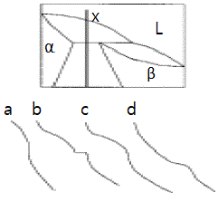
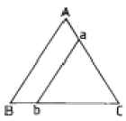
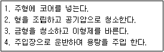

주조산업기사 (2005-05-29 기출문제)
1과목: 금속재료
1. 초경합금에 대한 설명으로 틀린 것은?
- 소결한 복합합금을 초경합금이라 말한다.
- 상온의 경도가 고온에서는 크게 저하된다.
- 압축강도는 강에 비해 높다.
- 인장강도는 강에 비해 낮다.
(정답률: 알수없음)

2. 금속이 지니는 일반적인 특성으로 틀린 것은?
- 고체상태에서 결정구조를 갖는다.
- 전기의 양도체이다.
- 열의 양도체이다.
- 전성 및 연성이 나쁘다.
(정답률: 알수없음)
3. 상온에서 오스테나이트조직을 나타내는 고망간 특수강은?
- 듀콜강
- 크로멜강
- 고속도 공구강
- 하드 필드강
(정답률: 알수없음)
4. 규소를 넣어 주조성을 개선하고 구리를 넣어 절삭성을 향상시킨 Al-Cu-Si계 합금은?
- 톰백
- 알루멜
- 크로멜
- 라우탈
(정답률: 알수없음)
5. 황동의 사용 중 또는 보관 중에 잔류된 내부응력에 의해서 균열이 발생하였을 때 가장 적당한 방지법은?
- As 또는 Sb를 첨가한다.
- 암모니아 분위기에서 풀림한다.
- 200 - 250℃에서 풀림처리한다.
- 산소 또는 탄산가스 분위기에서 풀림한다.
(정답률: 알수없음)
6. 분말야금(powder metallurgy)의 특징으로 틀린 것은?
- 절삭공정을 생략할 수 있다.
- 융해법으로는 만들 수 없는 합금을 만들 수 있다.
- 다공질의 금속재료를 만들 수 있다.
- 제조과정에서 융점까지 온도를 올려야 한다.
(정답률: 알수없음)
7. 소성가공에서 냉간가공의 특징으로 틀린 것은?
- 가공경화로 강도는 증가하나 연신율은 작아진다.
- 가공하기 쉬우며 거친 가공에 적합하다.
- 가공면이 깨끗하고 정밀한 모양으로 완성할 수 있다.
- 가공방향으로 섬유조직이 생기고 판재 등은 방향에 따라 강도가 달라지게 된다.
(정답률: 알수없음)
8. 고강도 저합금강으로 자동차용 탄소강판의 대용제품은?
- MARD
- LNGM
- LDCP
- HSLA
(정답률: 알수없음)
9. 탄소강 중 망간(Mn)의 영향을 바르게 설명한 것은?
- 강의 담금질 효과를 증대시켜 경화능이 커진다.
- 강의 점성을 저하시키고 가공성을 해친다.
- 연신율과 경도를 감소 시킨다.
- 주조성을 나쁘게 하고 고온에서 결정입의 성장을 촉진 시킨다.
(정답률: 알수없음)
10. 의료용(치열 교정용)이나 안경테에 가장 많이 쓰이는 것은?
- 방진 합금
- 세라믹스 합금
- 초탄성 합금
- 자성유체 합금
(정답률: 알수없음)
11. 물리적 성질이 아닌 것은?
- 비중
- 용융잠열
- 열팽창계수
- 충격흡수계수
(정답률: 알수없음)
12. 섬유강화 금속의 특징으로 틀린 것은?
- 섬유축 방향의 강도가 크다.
- 전자기적 특성이 우수하다.
- 2 차성형성, 접합성이 있다.
- 비강도, 비강성이 낮다.
(정답률: 알수없음)
13. 알루미늄 특성에 대한 설명으로 가장 거리가 먼 내용은?
- 알루미늄은 표면에 생기는 산화 피막으로 내식성이 나쁘다.
- 탄산염, 크롬산염, 초산염 등의 중성 수용액에서는 내식성이 좋으나 염화물 용액 중에서는 나빠진다.
- 산성 용액 중에서는 수소이온농도의 증가에 따라 부식이 증가하지 않는다.
- 대기 중에서 내식성이 좋으나 부식률은 대기 중의 습도, 염분 및 불순물 함유량에 따라 똑같다.
(정답률: 알수없음)
14. 철의 동소변태에 대한 설명 중 틀린 것은?
- α:철 910℃ 이하에서 체심입방격자이다.
- γ:철 910~1400℃에서 면심입방격자이다.
- β:철 1400~1500℃에서 조밀육방격자이다.
- δ:철 1400~1538℃에서 체심입방격자이다.
(정답률: 알수없음)
15. 0.2% 탄소강의 상온에서 초석 페라이트의 량은? (공석점의 탄소 함량은 0.8%임)
- 25%
- 35%
- 65%
- 75%
(정답률: 알수없음)
16. 다음 중 강괴에 대한 설명으로 틀린 것은?
- 완전탈산한 강을 킬드강이라 한다.
- 불완전 탈산한 강을 림드강이라 한다.
- 림드강은 기포나 편석이 없다.
- 킬드강은 표면에 헤어크랙(hair crack)이 있다.
(정답률: 알수없음)
17. 탄소가 흑연상태로 유리되어 흑연화되어 있는 주철은?
- 인주철
- 회주철
- 연주철
- 황주철
(정답률: 알수없음)
18. 다음 설명 중 틀린 것은?
- 6:4황동에 납을 소량 첨가하면 쾌삭성이 향상된다.
- 청동에 탈산제로 P를 첨가한다.
- 다이캐스팅용 Aℓ합금은 라우탈, 실루민 등이 있다.
- 황동에 Si을 소량 첨가하면 내해수성이 나빠진다.
(정답률: 알수없음)
19. 열간가공과 냉간가공의 한계는?
- 재결정온도
- 연성온도
- 소성가공온도
- 용융점
(정답률: 알수없음)
20. 결정의 형성과정 순서가 옳은 것은?
- 결정핵 발생 → 핵의 성장 → 결정경계 형성
- 핵의 성장 → 결정경계 형성 → 결정핵 발생
- 결정경계 형성 → 결정핵 발생 → 핵의 성장
- 결정핵 발생 → 결정경계 형성 → 핵의 성장
(정답률: 알수없음)
2과목: 금속조직
21. 물질 중에서 원자가 열적으로 활성화되어 이동하게 되는 현상을 확산이라 하는데 단일 금속 내에서 동일 원자사이에 일어나는 확산을 무슨 확산이라 하는가?
- 불순물확산
- 반응확산
- 자기확산
- 상호확산
(정답률: 알수없음)
22. 다음 2원계 합금의 포정형 상태도에서 X합금의 냉각곡선에 해당되는 것은?

- a
- b
- c
- d
(정답률: 알수없음)
23. 순철의 동소변태에 의하여 나타나는 조직이 아닌 것은?
- α - Fe
- β - Fe
- γ - Fe
- δ - Fe
(정답률: 알수없음)
24. 면심입방격자에서의 최근접 원자간 거리는?
- a/㎼2
- a/2
- ㎼3a
- (㎼3/2)a
(정답률: 알수없음)
25. 격자점에서 원자가 빠진 상태는?
- 규칙격자
- 공격자점
- 전위
- 선결함
(정답률: 알수없음)
26. 전율고용체를 형성하는 합금이 아닌 것은?
- Al - Ag
- Cu - Ni
- Au - Pt
- Al - Si
(정답률: 알수없음)
27. 순금속과 비교할 때 합금에서 얻어지는 일반적인 성질이 아닌 것은?
- 일반적으로 융점이 낮아지므로 주조성이 양호해진다.
- 강도 및 경도가 높아진다.
- 변태가 없는 순금속들끼리 합금하여도 열처리가 가능한 경우가 있다.
- 전기 및 열전도도가 양호해진다.
(정답률: 알수없음)
28. 냉간가공으로 금속이 받는 성질의 변화는 풀림처리에 의하여 가공전의 상태로 돌아가는 경향을 가지나 결정립의 모양이나 결정의 방향에 변화를 일으키지 않고 경도, 전기저항 등의 성질만이 변화는 과정은?
- 회복(recovery)
- 재결정(recrystallization)
- 결정립 성장
- 집합 조직(texture)
(정답률: 알수없음)
29. 원자배열이 어느 축을 경계로 전혀 반대의 배열을 갖는 것은?
- 초격자
- 역위상구역
- 중격자
- 장범위 규칙도
(정답률: 알수없음)
30. 마텐자이트(Martensite)의 결정구조는?
- 면심입방구조(FCC)
- 체심입방구조(BCC)
- 조밀육방구조(HCP)
- 체심정방구조(BCT)
(정답률: 알수없음)
31. 고체를 구성하는 원자 결합 방법의 분류가 아닌 것은?
- 분자결합(molecular bond)
- 금속결합(metallic bond)
- 이온결합(ironic bond)
- 전위(dislocation)
(정답률: 알수없음)
32. 시효경화 합금으로 가장 대표적인 것은?
- Al-Cu합금
- Al-Fe합금
- Al-Pb합금
- Al-Mo합금
(정답률: 알수없음)
33. 결정격자 중 한개의 원자가 격자사이로 이동하면 그 격자내에는 격자간 원자와 원자공공이 한쌍으로 된 결함은?
- 원자공공
- 격자간 원자
- 프렌켈 결함
- 크라우디온
(정답률: 알수없음)
34. 용질원자가 용매원자의 결정격자 사이의 공간에 들어간 것을 무엇이라 하는가?
- 침입형 고용체
- 치환형 결정체
- 금속간 혼합체
- 재결합 전이체
(정답률: 알수없음)
35. 2성분(원)계 공정형 합금상태도에서 열분석곡선의 공정반응정체시간을 나타내고 또한 공정조직의 조성을 산출할 수 있는 기준은?
- Tammann의 삼각형
- 용해도 곡선
- Gibbs의 상률
- 자유도(F)
(정답률: 알수없음)
36. 재결정 거동에 영향을 주는 요인으로 틀린 것은?
- 재결정 이전의 가공도
- 풀림 온도
- 조성
- 말기 결정입도
(정답률: 알수없음)
37. 냉간가공에 따른 금속재료의 성질 변화 중 틀린 것은?
- 인장강도가 증가한다.
- 경도가 증가한다.
- 연신율이 감소한다.
- 인성이 증가한다.
(정답률: 알수없음)
38. 순철의 변태점이 아닌 것은?
- A1
- A2
- A3
- A4
(정답률: 알수없음)
39. 어느 물질계의 자유에너지가 G = H - TS으로 주어질 때 S가 뜻하는 것은?
- 내부에너지
- 절대온도
- 엔트로피
- 상태변수
(정답률: 알수없음)
40. 그림에서 a, b선으로 표시되는 합금은?

- A조성이 일정하고 BC 조성이 변하는 합금
- B조성이 일정하고 AC 조성이 변하는 합금
- C조성이 일정하고 AB 조성이 변하는 합금
- AB조성이 일정하고 BC 조성이 변하는 합금
(정답률: 알수없음)
3과목: 일반주조
41. 다음은 주물의 보수에서 충전재(充塡材)에 대한 설명 중 맞는 것은?
- 주물 소지의 색과 차이가 나야한다.
- 주물금속과 결합성이 양호해야 한다.
- 등유 및 기름에 충분히 녹아야 한다.
- 경화 후 충격에 의해 주물품에서 잘 떨어져야 한다.
(정답률: 알수없음)
42. 주형의 역할로 틀린 것은?
- 용탕이 공간부 안까지 흘러들어가는 통로의 역할
- 응고된 주물의 표면상태를 결정하는 역할
- 용탕속으로 가스를 쉽게 흡수하는 역할
- 주물로부터 적당한 속도로 열을 제거하는 역할
(정답률: 알수없음)
43. 탕구계에 대한 설명 중 틀린 것은?
- 탕구계라 함은 탕구, 탕도, 주입구 등의 총칭이다.
- 주형 침식과 가스혼입 방지를 위해 난류상태의 주입을 유도한다.
- 최적의 온도 구배를 이루어 방향성 응고가 되도록 한다.
- 용탕의 유입 도중 슬랙제거를 할 수 있어야 한다.
(정답률: 알수없음)
44. 수지원형제작 과정에서 제1층의 겔코트가 어느 정도 건조상태에서, 제2층의 겔코트의 도포 적층 또는 배킹작업을 진행하는 것이 좋은가?
- 1차 도포 후 즉시 2차 도포한다.
- 흘러내릴 정도의 상태에서 2차 도포한다.
- 다소 끈적끈적한 정도로 굳었을 때 2차 도포한다.
- 완전히 경화되었을 때 2차 도포한다.
(정답률: 알수없음)
45. 주물이 응고할 때 주형벽으로부터 결정립 조직의 변화 과정으로 맞는 것은?
- 미세한 등축정 → 주상정 → 조대한 등축정
- 주상정 → 조대한 등축정 → 미세한 등축정
- 조대한 등축정 → 미세한 등축정 → 주상정
- 미세한 등축정 → 조대한 등축정 → 주상정
(정답률: 알수없음)
46. 주물사의 충진(=잘 다져진)이 모형 전체에 균일하게 다져지는 조형방법은?
- 손 조형법
- 테이블법
- 콘베어법
- 졸트-스퀴즈법
(정답률: 알수없음)
47. 주조품의 성분, 편석, 결정입자의 치밀성 등을 검사하는데 가장 적합한 것은?
- 외관검사
- 파면검사
- 치수검사
- 모양검사
(정답률: 알수없음)
48. 컴퓨터에서 중앙처리 장치(CPU)의 구성요소가 아닌 것은?
- 제어장치
- 연산장치
- 보조기억장치
- 주기억장치
(정답률: 알수없음)
49. 주철주물 중량이 1600kg이고 살 두께에 따른 상수가 4일 경우 예상되는 주입시간(sec)은? (Dietert식에 따름)
- 80
- 100
- 160
- 320
(정답률: 알수없음)
50. 유동성 시험법에서 유동성을 시험하기 위한 주형의 종류로 틀린 것은?
- 쐐기모양의 주형
- 긁기 주형
- 달팽이모양의 주형
- 직선상 주형
(정답률: 알수없음)
51. 주조를 위한 현도를 작성할 때 반드시 고려해야 할 것은?
- 용해온도
- 작업장 온도
- 주물사 종류
- 수축여유
(정답률: 알수없음)
52. 목재의 변형을 방지하기 위한 방법으로 틀린 것은?
- 질 좋은 목재를 선택한다.
- 내부상태를 확인하고 충분히 건조한 후 사용한다.
- 목재의 접합은 정확히 하고 알맞게 도장한다.
- 벌채 시기는 봄과 여름에 한다.
(정답률: 알수없음)
53. 주형재료 사용시 규석 가루를 사용하는 가장 큰 목적은?
- 높은 온도의 용탕에 의한 모래알이나 점토 등의 팽창수축을 촉진하여 주형의 균열을 방지한다.
- 모래알 사이를 메워서 용탕이 스며드는 것을 막아 주물 표면을 곱게 한다.
- 주물사가 용탕에 혼입되도록 온도를 조정한다.
- 주형의 유동성을 낮추어 준다.
(정답률: 알수없음)
54. 주물표면 결함 중 소착의 가장 큰 원인은?
- 주형 내의 가스빼기가 원할할 때
- 주물사의 내화도가 낮거나 국부적인 과열 현상이 있을 때
- 모래의 다짐강도가 클 때
- 주형 내의 건조상태가 충분할 때
(정답률: 알수없음)
55. 큐폴라의 열풍조업시 열풍온도를 변화시켜 노황을 제어하고자 할 때 제어 방법으로 가장 옳은 것은?
- 용탕중에 탄소가 높고 출탕온도가 높을 경우에는 열풍온도, 송풍량, 코크스량을 낮춘다.
- 용탕중에 탄소가 높고 출탕온도가 낮을 경우에는 열풍온도, 송풍량, 코크스량을 높인다.
- 용탕중에 탄소가 낮을 경우에는 열풍온도를 낮춘다.
- 열풍온도가 높고 출탕온도가 낮을 때는 열풍온도를 최고로 유지하고 송풍량, 코크스량을 낮춘다.
(정답률: 알수없음)
56. 모형제작용 에폭시 수지의 특성 중 틀린 것은?
- 경화시 수축이 적다.
- 경화 시간이 길다.
- 치수가 정확하다.
- 내마모성이 좋다.
(정답률: 알수없음)
57. 주물의 수축결함을 방지하는 방법 중 틀린 것은?
- 보온재로 서냉시킨다.
- 충분한 크기의 압탕을 붙인다.
- 균열발생 부위에 냉금처리 한다.
- 주입온도를 상승시킨다.
(정답률: 알수없음)
58. 주물사가 갖추어야 할 조건으로 틀린 것은?
- 내화성이 양호할 것
- 통기성이 양호할 것
- 용해성이 양호할 것
- 성형성이 양호할 것
(정답률: 알수없음)
59. 원형을 제작할 때 변형이나 파손되기 쉬운 부분을 방지하기 위한 대책으로 옳은 것은?
- 루즈피스를 둔다.
- 덧붙임을 한다.
- 모형을 가늘게 한다.
- 코어를 붙인다.
(정답률: 알수없음)
60. 주물의 제조공정이 바르게 된 것은?
- 주형제작 → 원형제작 → 용해,주입 → 후처리,검사
- 원형제작 → 주형제작 → 용해,주입 → 후처리,검사
- 주형제작 → 용해,주입 → 원형제작 → 후처리,검사
- 원형제작 → 용해,주입 → 주형제작 → 후처리,검사
(정답률: 알수없음)
4과목: 특수주조
61. 실리콘 원심 주형에 주입하는 용탕(재료)으로 적합 하지 않는 것은?
- 아연
- 납
- 철
- 주석
(정답률: 알수없음)
62. 다이캐스트 금형설계시의 요점사항으로 틀린 것은?
- 형의 분할면을 고려한다.
- 압출시의 핀의 위치를 고려한다.
- 넓은 평면을 정밀하게 나타내므로 가공 여유를 두지않고 곡면을 피한다.
- 기준면을 결정한다.
(정답률: 알수없음)
63. 쉘몰드 주조공정 순서가 맞는 것은?

- 1 → 2 → 3 → 4
- 2 → 1 → 3 → 4
- 3 → 1 → 2 → 4
- 4 → 3 → 2 → 1
(정답률: 알수없음)
64. Furan Resin Process에 사용되는 주물사의 선택기준이 틀린 것은?
- 가능한 둥근형태의 주물사를 선택한다.
- 알칼리성이 강한 주물사가 적합하다.
- 세척하지 않은 해변모래보다는 규사 및 하천모래가 적합하다.
- 모래의 수분함량은 경화속도에 민감하므로 충분히 건조한 모래를 사용한다.
(정답률: 알수없음)
65. 주조결함 중 거친 주물표면의 생성원인으로 틀린 것은?
- 모래입자가 너무 굵을 때
- 주철의 경우 주물사에 수분함량이 지나치게 많을 때
- 주입온도가 낮을 때
- 용탕의 압력이 지나치게 높을 경우
(정답률: 알수없음)
66. 다이캐스팅기 유압장치의 구성 요소에 해당 되지 않는 것은?
- 제어부
- 가공부
- 동력부
- 작동부
(정답률: 알수없음)
67. 소석고(CaSO4·1/2H2O)에 다음과 같은 반응에 따라 물을 넣으면 경화하여 정밀주형으로 이용된다. 다음 합금주물 중 이용할 수 없는 것은? (단, CaSO4·1/2 H2O + H2O → CaSO4·2H2O)
- 아연합금주물
- 구리합금주물
- 주강주물
- 알루미늄합금주물
(정답률: 알수없음)
68. 정밀주조법의 장점으로 틀린 것은?
- 기계가공을 생략할수 있다.
- 치수가 정밀하다.
- 기공발생을 전부 방지할 수 있다.
- 표면이 깨끗하다.
(정답률: 알수없음)
69. CO2주형에서 고사를 회수하는 방법 중 틀린 것은?
- 고사를 분쇄하여 미분을 취하는 방법
- 고사를 분쇄하여 수세 후 건조하는 방법
- 고사를 분쇄하여 로터리킬른으로 소성하는 방법
- 진동식 샌드쿨러를 이용한 분쇄방법
(정답률: 알수없음)
70. 쇼 프로세스(Show process)에 대한 설명으로 맞는 것은?
- 용탕주입시 열팽창에 의한 주형의 변형이 심하다.
- 미국의 쉘이 개발한 것으로 로스트 왁스를 사용한다.
- 금형에서는 사용할 수 없고 회전형으로만 주형제작이 가능하다.
- 치수가 정밀하고 주물표면이 아름답다.
(정답률: 알수없음)
71. 다이캐스트 제품의 결함에서 용탕온도와 금형온도가 낮은 경우, 압입압력과 압입속도가 부족할 때 용탕이 금형내를 흐르는 사이에 열량을 상실하여 일어나는 현상은?
- 탕경(Cold Shut)
- 소착(Burning)
- 열균열(Heat Crack)
- 수축공(Shrin Kage)
(정답률: 알수없음)
72. 알루미늄 다이캐스팅에서 주조 성능을 높이는 요인으로 틀린 것은?
- 수축율이 많을 것
- 용융점이 알맞을 것
- 금형에 융착되지 않을 것
- 용탕의 유동성이 좋을 것
(정답률: 알수없음)
73. 인베스트먼트 주조법에서 탈왁스 작업에 사용되는 방법은?
- 인젝션머신법
- 오토클레이버법
- 레인스타코기법
- 플루다이즈드베드기법
(정답률: 알수없음)
74. 쉘몰드법(shell mould process)의 특징 중 틀린 것은?
- C-process(Croning process)라고도 한다.
- 규사는 15∼20메시의 순도가 높은 건조규사를 사용한다.
- 금형을 200∼300℃로 가열시켜 폐놀수지를 경화시켜 얇은 주형을 만든다.
- 대형주물 및 소량생산에 부적합하다.
(정답률: 알수없음)
75. CO2형 주형에 소착을 방지하기 위한 도형제에 관한 사항으로 틀린 것은?
- 내화도가 용탕 온도보다 높아야 좋다.
- 도형제 분말의 침전이 잘 되어야 한다.
- 수분을 가능한 한 함유하고 있지 않아야 한다.
- 고온에서 환원성을 가져야 한다.
(정답률: 알수없음)
76. 경화기구에 의한 자경성 주형의 분류가 아닌 것은?
- 산화중합 또는 축합반응에 의한 것
- 수경성에 의한 것
- 겔(gel)화에 의한 것
- 알콜의 첨가에 의한 것
(정답률: 알수없음)
77. CO2 법에 쓰이는 주물사는?
- 규사 ＋ 점토
- 규사 ＋ 광물유
- 규사 ＋ 염화크롬
- 규사 ＋ 규산나트륨
(정답률: 알수없음)
78. 쉘 몰드법에서 슬랙 혼입의 원인으로 틀린 것은?
- 불순물 제거 시설미비
- 주입전 용탕내의 불충분한 교반
- 형벽에서 모래 떨어짐
- 적당한 주입온도
(정답률: 알수없음)
79. 인베스트먼트 주조법의 주요공정은 "납모형제작-납모형 조립-코팅-탈납-( )-용해,주입-후처리, 검사"로 이루어 진다. ( )의 적합한 내용은?
- 슬러리
- 스타코우
- 소성, 예열
- 크라스터
(정답률: 알수없음)
80. 모형으로써 목형이나 금형을 사용하지 않고 발포성 폴리에틸렌으로 만든 모형을 사용해서 조형하는 방법은?
- 풀몰드법
- 석고주형법
- 쇼오프로세스법
- N법
(정답률: 알수없음)
초경합금은 소결 과정을 통해 만들어지는 복합합금으로, 다양한 금속 원소를 혼합하여 만들어집니다. 이러한 구성 때문에 초경합금은 강보다 높은 압축강도를 가지고 있습니다. 하지만 인장강도는 강에 비해 낮은 편입니다.
그리고 "상온의 경도가 고온에서는 크게 저하된다."는 맞는 설명입니다. 초경합금은 고온에서 사용되는 재료로, 고온에서는 구조가 불안정해지고 결정 구조가 변화하면서 경도가 크게 저하됩니다. 따라서 초경합금은 고온에서 사용될 때는 이러한 특성을 고려하여 설계되어야 합니다.